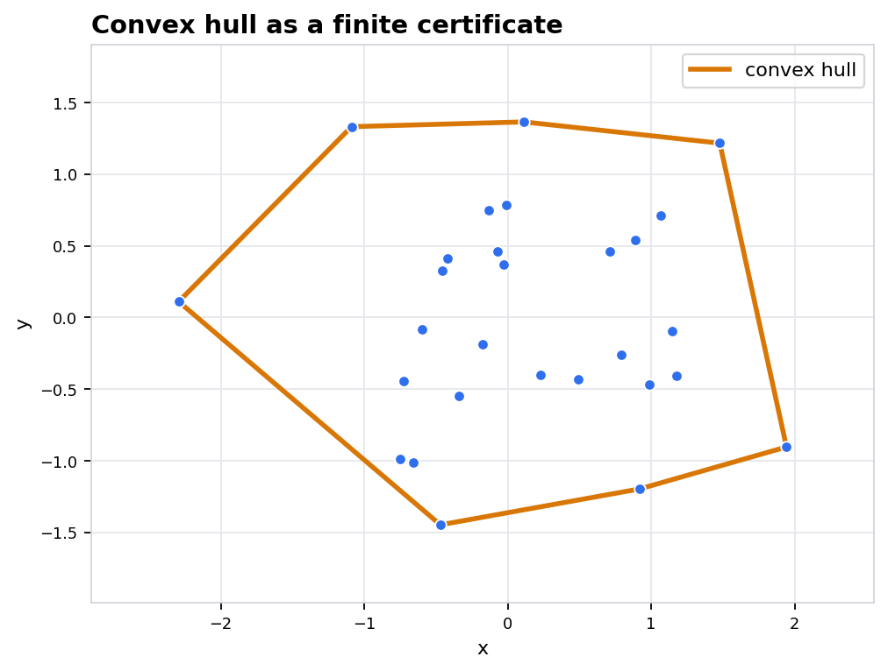
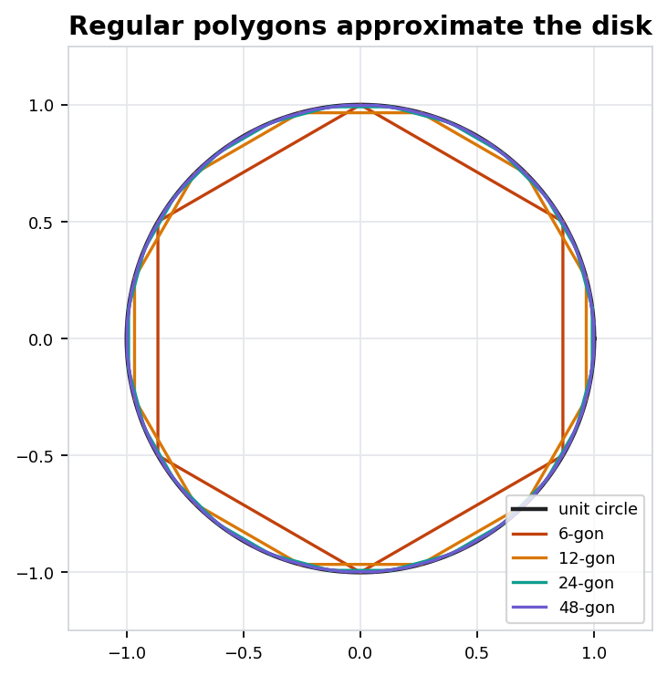

A lecture on finite certificates, support data, volume and area checks, Euler characteristic, rigidity, approximation, and isoperimetric limits.
A polytope can be stored as vertices or as supporting half-spaces. The lecture keeps both forms visible.
Numerical checks turn polygonal and polyhedral formulas into inspectable evidence, not decorative arithmetic.
Euler characteristic, Cauchy rigidity, and isoperimetry ask which quantities survive deformation or refinement.
For compact \(K\), the maximum exists. The exposed face in direction \(u\) is where the supporting hyperplane touches.


| n | area | error | relative |
|---|---|---|---|
| 6 | 2.5981 | 0.5435 | 0.1730 |
| 12 | 3.0000 | 0.1416 | 0.0451 |
| 24 | 3.1058 | 0.0358 | 0.0114 |
| 48 | 3.1326 | 0.0090 | 0.0029 |
| Polyhedron | V | E | F | chi |
|---|---|---|---|---|
| tetrahedron | 4 | 6 | 4 | 2 |
| cube | 8 | 12 | 6 | 2 |
| octahedron | 6 | 12 | 8 | 2 |
Here \(p\) is the number of edges per face and \(q\) is the number of faces meeting at each vertex.
| \(\{3,3\}\) | tetrahedron |
| \(\{4,3\}\) | cube |
| \(\{3,4\}\) | octahedron |
| \(\{5,3\}\) | dodecahedron |
| \(\{3,5\}\) | icosahedron |
Sample directions \(u_1,\ldots,u_N\), keep their support inequalities, and obtain an outer polytope. Sample boundary points and take their convex hull for an inner polytope.
Equality singles out the circle in the plane and the sphere in space. Polytopes approximate the extremal shape but keep a measurable deficit.
Compute \(A_n=\frac n2\sin(2\pi/n)\) for \(n=96\). Predict how the error should compare with the \(n=48\) row.
Choose a convex polyhedron, count \(V,E,F\), and test whether \(V-E+F\) matches the sphere value.
Pick a direction \(u\), identify the exposed face, and decide whether a small perturbation changes the face dimension.
Translate pictures into vertices, inequalities, support functions, and face lattices.
Pair formulas for area and volume with orientation conventions and convergence checks.
Use Euler characteristic and regularity data to separate incidence from metric detail.
Approximate compact convex sets by polytopes, then read rigidity and isoperimetry as global stability statements.